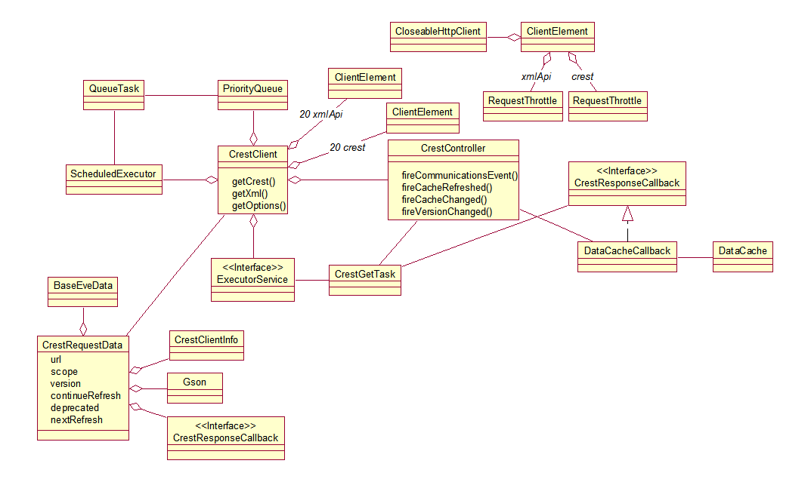

The CrestClient is the heart of crestj. It handles the http connectivity with eve delivering the results to the DataCache as well as reporting status events to the CrestController.

The various EveData classes (described here) call the CrestClient's getCrest, getXml and getOptions methods to trigger an asynchronous client. The CrestRequestData objects passed into these three methods contain all of the state needed for the for this subsystem to complete these three getters.
The three getters will instantiate a CrestGetTask and submit it to the ExecutorService for execution on a different thread. These methods will return, non-blocking.
Based on the call, a CloseableHttpClient via the ClientElements will be obtained from one of the two, 20 connection pools by the CrestGetTask. Twenty is the value stated for the maximum number of outstanding connections for crest. It was assumed the same limit might apply to the xmlapi as well. These two pools will block until one is free if all twenty are active.
The http request is issued to the url specified in the CrestRequestData object and the response is handled by the CrestGetTask. The CrestControllers fireCommunicationsEvent is called to reflect the pass/fail condition of the call. All CrestController fire event methods are non-blocking and registered callbacks will be called on a different thread. The xmlApi clients health is tracked separately from the crest clients.
Note that at system startup the CrestController requests the Timer endpoint to start a crest heartbeat and the ServerStatus to start an xmlapi heartbeat. The CrestController will re-issue the appropriate heartbeats once every 5 seconds until they finally respond.
Any subsystem (i.e. gui for popping up alerts) can register for callback on any of the CrestController fire event methods.
Upon success, the CrestGetTask converts the json/xml to EveData and calls the CrestResponseCallback interface which passes the received EveData to the DataCacheCallback which compares the incoming data with the data in the cache to see if it has changed and pushes the new data to the cache. The CrestController's fireCacheRefreshed is then called and if the data has changed the fireCacheChanged is also called.
If the request is flagged for automatic refresh the CrestRequestData is pushed onto the PriorityQueue which orders the queue by the received refresh rate for the api (nextRefresh). The QueueTask is scheduled at a fixed rate to poll the PriorityQueue and re-issue all items who's refresh rate's have expired. This causes an endless poll loop from eve for the requested api's at the proper times to upate the cache.